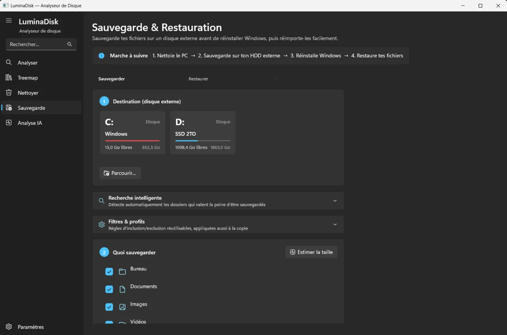

Analyse l'espace disque, nettoie les caches et les doublons, puis sauvegarde tes fichiers sur un disque externe avant de réinstaller Windows, avec restauration facile ensuite.
Projet privé — présenté ici en description et captures. Code et téléchargement non publics.


Repère ce qui prend de la place sur tes disques.
Caches système, fichiers en double (SHA-256), compression des fichiers froids. Mode simulation par défaut.
Copie miroir avec vérification d'intégrité, restauration sélective.
Recherche intelligente des dossiers qui valent la peine d'être sauvegardés.